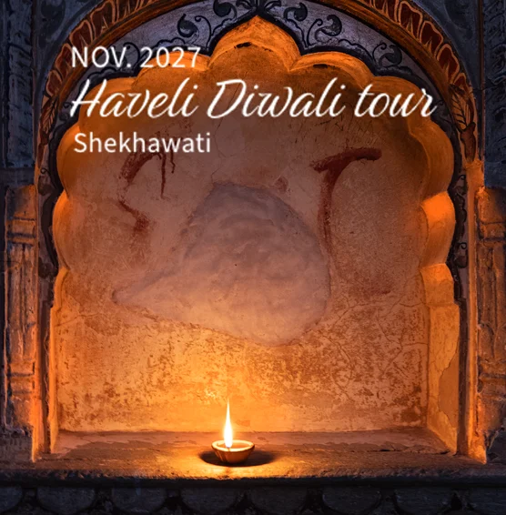
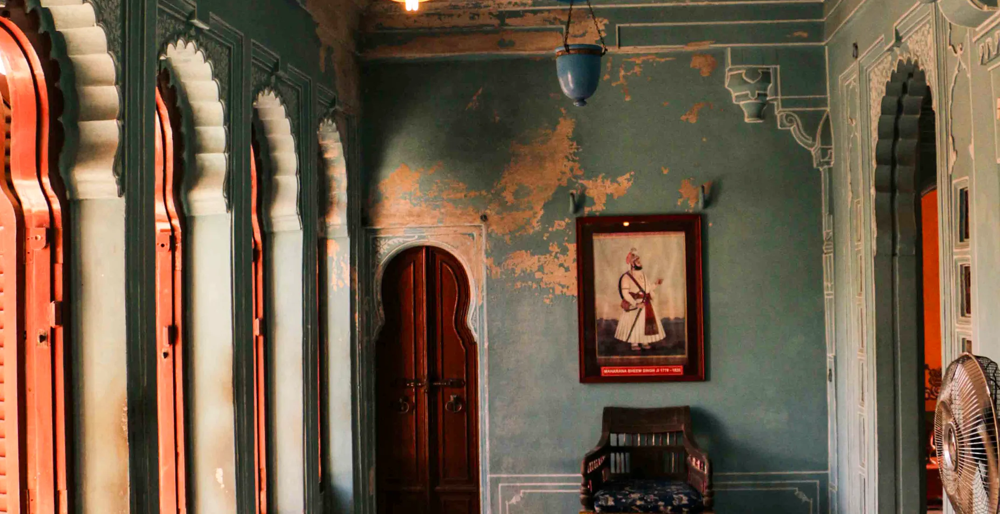

Spirit of India
Private luxury tours and small group journeys
Our private Pushkar Fair tours and small group journeys mix luxury with adventures far from the crowds. Enjoy a traditional family Diwali, luxury camping at Pushkar Fair, charming heritage hotels and spiritual walks.
As well as a warm welcome, our years of experience and in-depth research help us to offer you unique opportunities and insights. We are known for our India tours and as regional and Pushkar Fair specialists and are happy to provide references before you book.
85% of our clients have either travelled with us before or come from recommendations - please get in touch to know more. Contact us >
Pushkar Festival Tours
Discover Rajasthan’s vibrant colours and culture with experts! Our tailor-made tours take in Delhi, Agra and the Taj Mahal, Diwali celebrations, Pushkar Camel Fair, and the fascinating Shekhawati region of Rajasthan and you may include any other destinations in India. As well as India’s most iconic sights, you’ll experience the fun and fireworks of Rajasthan’s festive season.
You will travel in a comfortable, well-maintained vehicle with an experienced driver, with stays at fascinating heritage properties - luxury for less!
What Our Guests Say
I have travelled with Indian Moments many times. From discussing the tour with Neeraj and completing the tour the experience is always amazing. This latest trip took in Jodhpur, Udaipur and Jaipur and as always hotels, drivers and guides were well chosen. The highlight was celebrating Holi Festival in the family haveli. TripAdviser (https://www.tripadvisor.in/Attraction_Review-g304555-d25308461-Reviews-Indian_Moments-Jaipur_Jaipur_District_Rajasthan.html)
franodriscoll, UK. Mar 2026
enquiry ▶Small Group Journeys
Our special small group journeys give the feel of a tailor-made tour whilst travelling with a small number of other guests and are ideal for couples or single travellers (if you are travelling on your own, we may be able to help you find someone to share with).

November 05 to 15 2027Follow pilgrimage routes on a journey combining Delhi, Agra and Jaipur with two extraordinary festivals - Pushkar Fair and the spectacular and moving Dev Deepavali celebrations in Varanasi. See more >

October 23 to 08 November, 2027Join us for a fascinating small group journey on less travelled routes, visiting the Golden Temple of Amritsar and the majestic fort and walled city of Jodhpur. See more >

Explore old havelis and see some of Rajasthan’s finest art in picturesque Bundi and Shekhawati, join pilgrimage celebrations and meet local artisans and farmers. See more >